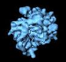

Single Particle Reconstruction with Reference Projections using SPIRE

|  |
Single Particle Reconstruction with Reference Projections using SPIRE |
|
This page describes how to do a 3D single particle reconstruction project using
SPIRE.
Each step of a project is accomplished by running a series of SPIDER procedure files,
described on the Single Particle Reconstruction web page.
SPIRE provides a graphical interface for running procedure files, and keeps track
of all data files that are part of a project.
Starting a project in SPIRE
Project parameters
Input files needed for a reconstruction project
Running SPIDER procedure files
File numbers
Viewing procedure file outputs
The SPIRE manual
Starting a project in SPIREAt the start of a reconstruction project, a project directory has to be set up with the proper subdirectories and procedure files. SPIRE keeps all information about a project in a project file. |
spireproj145, the next time you can open SPIRE by including the
file's name on the command line, e.g.:spire proj145
Project title: | give a descriptive title for your project. |
Project file: | a filename
WITHOUT AN EXTENSION! e.g., " proj123", not
"proj123.hrs" |
Data extension: | SPIDER data extensions must have 3 characters. |
Host machine: | the computer where the project physically resides. |
Project directory: | create a new directory for your project. By default, SPIRE suggests a directory with the same name as the data extension. Or, you can use the Browse button to select a pre-existing directory. |
Configuration file: | Select
SingleParticle.xml or
SingleParticleParms.xml |
Create directories : | make sure this box is checked. |
params.ext. These are accessed by numerous procedure files. See the description of
single particle reconstruction parameters.
When you start a new project, SPIRE opens up a
Project Parameters window. (If it doesn't,
then under the Parameters menu, select New.) Be sure to fill in values for:
zip flag: |
whether or not the micrographs are zipped (i.e., have the extension .gz). |
file format: |
(of micrographs) May be SPIDER or output from a scanner. |
pixel size: |
Angstroms/pixel after scanning. Pixel size also sets the values for
max.spatial frequency, window size, and
particle size |
electron energy: |
(kV) Also sets lambda |
spherical aberration: |
Set appropriate value for Microscope |
particle window size: |
(in pixels) diameter of the small particle images |
particle diameter: |
(in pixels, approximate) default values are for Ribosome!! |
cd to your project directory, remove Micrographs, and
make a symbolic link: rmdir Micrographs ln -s /actual/location/of/the/micrographs
Micrographs .gz).
reference_volume.ext.

**** SPIDER NORMAL STOP **** will display in the main window,
and information about that particular run will be saved to the project file.
Some procedure files use a special parameter called [FILENUMS],
which points to a document file that selects which input files are to be processed.
The contents of the file numbers document file (usually called filenums.ext)
can be controlled by the
File numbers
entry box in the lower left corner of the main SPIRE window. With the cursor in the File
numbers entry box, hitting the Enter key writes the displayed values
into the filenums file.
Sometimes it is useful to try out a procedure file with a single file. Once you've established that it runs correctly, set the file numbers to the rest of the input data files. If you run the same procedure file with different file numbers each time, those are considered distinct procedure runs.
Viewing procedure file outputsSPIDER procedure files generate output data files, either text (document files), or binary (images, volumes, image stacks, etc). When a procedure file completes successfully, it is saved to the project file. You can see which procedure files you have run, as well as examine their output files, in the SPIRE Project Viewer. Under the Commands menu, select View project. This brings up the Project Viewer with completed procedure runs in the upper window. Clicking on a procedure run in the upper window displays the output files for that procedure in the lower window. Clicking on an output file displays it. Image files are displayed in Jweb; documents are displayed in a text editor.
Source: mrspire.html Page updated: 14/07/28